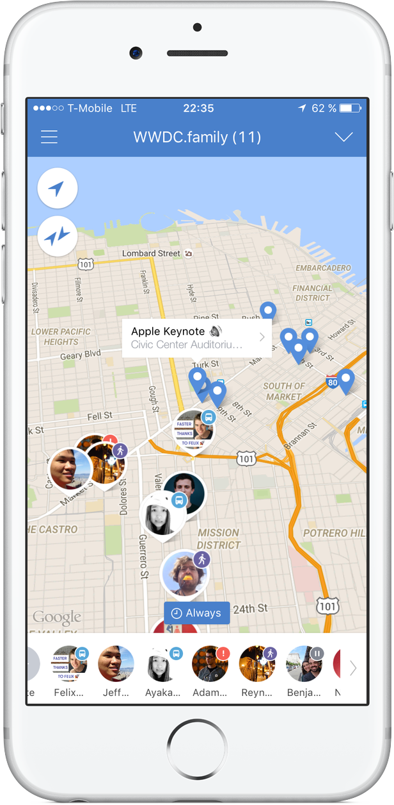

WWDC.family
Let's start a location sharing group for an exciting WWDC week in San Francisco
Why?
WWDC week in San Francisco is exciting and overwhelming at the same time: so many iOS and Mac developers all in one city. You finally have the chance to meet all the people in person you interact with online usually.
By making a real-time map of all developers you'll be able to spontaneously meet nearby developers or join other groups.
How does it work
Unfortunately Apple limits the number of users in a location sharing group.
That's why we will use line.here instead: it's free, allows you to temporarily disable sharing location and you don't need to create another account - you can use your Facebook or Line account.
Register
Fill out the Google Form and wait for further instructions.
Ideas
If you have any ideas, please get in touch with me on Twitter